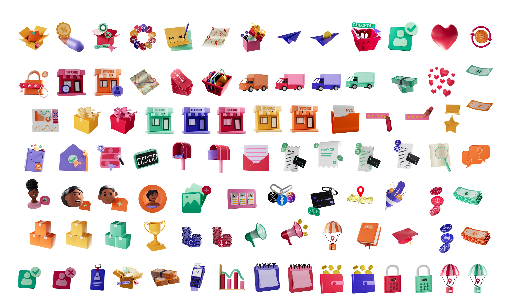
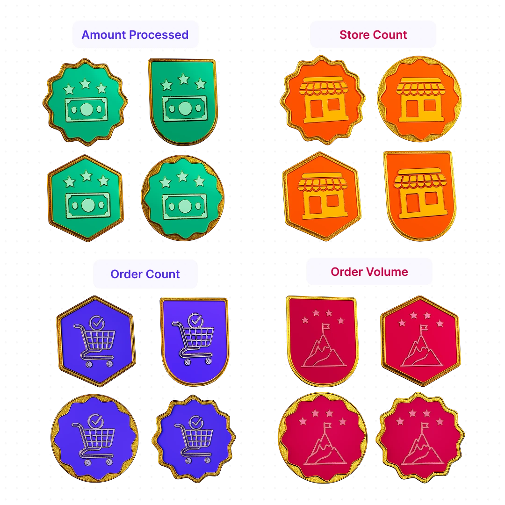

I built a full library of 3D icon illustrations for Catlog, the business management app that helps African merchants run an online store, take payments, and manage records in one place.
Every action in the product — checkout, coupons, receipts, invoices, deliveries, payouts, KYC, security — got its own 3D object, and I designed the full set to share one visual language, so the app, social, and video content all pull from the same system.
Most of the real work happened in lighting and material setup. I built a single rig and shading system in Redshift that every icon dropped into, keeping lighting consistent across the entire set, and tuned materials by hand until matte, glossy, and metallic surfaces all carried the same warmth and finish as Catlog's brand.

Milestone badges for users
